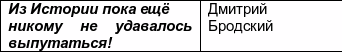

|

- Очерки психологии мировоззрения как основы просветительской практики ( Comments )
- От ничтожности к сопоставимости с Мирозданием или к вопросу о смысле существования человека ( Comments )
- Нобелевская лекция И.П.Павлова 'О русском уме' ( Comments )
- Проект "Бизнес, власть, общественность и СМИ в российской благотворительности" ( Comments )
- Дело Виталия Бунтова ( Comments )
- Дело Егора Новиковского ( Comments )
- Все мы сыны и дочери Человечества, но не собственность возомнивших о себе… ( Comments )
(все новости...)


| Главная-->МНОБ-лист-->Листовки-->Зачем России нужен был Кавказ? | ||
|
|
|
|
 Таков универсальный «закон обратных связей» |

ЛИСТОВКА просветительско- правозащитной группы «Обратная связь». Москва. 23 февраля 2012 г.
Зачем России нужен был Кавказ?
Сегодня мы отмечаем очередную годовщину депортации чеченцев и ингушей в феврале 1944 года. По приказу Сталина 387 тыс. чеченцев и 91 тыс. ингушей в считанные дни были погружены в товарные вагоны и выселены в республики Средней Азии со своей родной земли. Любое сопротивление жестоко подавлялось. До места назначения доехала половина, а еще половина от оставшихся людей умерли от голода и холода уже в диких степях. Вайнахи стали лишь очередными в списке депортированных народов за время тиранической диктатуры Сталина. И это преступление, как, впрочем, и все остальные преступления режима, до сих пор не осуждено.
Вдумайтесь: целый народ был обвинён в предательстве, якобы «за пособничество фашистским оккупантам». Сегодня известно, что сотни тысяч жителей Советского Союза переходили на сторону завоевателя на оккупированных территориях, и русских среди них было подавляющее большинство – прежде всего потому, что русские составляют вообще самую многочисленную группу населения на территории европейской части СССР, а сегодня – России. Но, однако, русских Сталин не обвинил в предательстве… Стоит отметить и тот факт, что в Советской армии служили, между прочим, и чеченцы с ингушами (всего около 40,5 тыс. человек). Более 100 чеченцев и ингушей были отмечены во время войны высшей наградой – Звездой Героя Советского Союза. К слову – треть защитников Брестской крепости – были вайнахи. «Славно» же «Родина» отблагодарила своих сынов…
Реабилитация депортированных народов состоялась только после смерти вождя «советского племени», и многие вернулись домой, где им не очень-то были и рады: их земли и дома были уже заняты другими людьми, - как правило, по разнарядкам переселенными из центральных регионов Советского Союза.
Такие раны заживают долго, и строить новую жизнь на пепелище непросто.
Распад Советского Союза в 1991 году был с надеждой встречен многими его народами, но принёс народам Северного Кавказа лишь новые испытания. Две чеченские войны унесли жизни более 200 тыс. людей – наших с вами сограждан. Военные преступления против мирных жителей, совершённые представителями федеральных войск России в подавляющем большинстве до сих пор не расследованы. Правозащитный центр “Мемориал” по крупицам собирает информацию о пропавших без вести и погибших людях. 14 февраля 2012 г. сотрудники Центра представили первую книгу под названием “Судьба неизвестна”. В ней собраны сведения о почти четырёх сотнях жителей Чечни, задержанных российскими силовиками в 1999 – 2000 гг. и впоследствии исчезнувших или найденных убитыми.
По словам авторов издания, за совершённые преступления никто не ответил, но так называемая контртеррористическая операция на Северном Кавказе в конце 1999 гг. стала основой первой предвыборной президентской кампании В.П. Один из авторов книги, член правозащитного центра “Мемориал” А.Черкасов говорит, что собранные в ней материалы – лишнее напоминание кандидату в президенты Путину о том, с чего началось его правление 12 лет назад.
Из публикации Елены Поляковской на сайте радио “Свобода” от 14 февраля 2012 года:
«В.П. нужно думать не о программе деятельности на следующие 6 или 12 лет – думать нужно об ответственности за предыдущие 12 лет правления. И, прежде всего, об ответственности за то, с чего это правление началось, с чего его рейтинг с ничтожно малых величин вознёсся до заоблачных. Об ответственности за военные преступления и преступления против человечности в ходе второй чеченской войны. И едва ли не самые страшные преступления этой войны – это исчезновения людей. Сколько всего человек пропало в ходе второй чеченской войны сказать сложно, по нашим оценкам – около 3-х тысяч человек”.
В Чечне и в сопредельных республиках, где в последние 17 лет не прекращалась имперская и, вызванная ею, гражданская войны, бесследно пропали тысячи людей. На этой территории зафиксированы бесчисленные факты преступлений против личности: убийства, пытки, насилие. Читая воспоминания выживших жертв и очевидцев «зачисток», родственников пропавших без вести людей и погибших в застенках МВД, ФСБ, в так называемых «фильтрационных лагерях», а также документы судебных процессов, невольно сравниваешь действия наших «федералов» с преступлениями нацистов во время Второй мировой войны, - разницы нет никакой. Кроме, пожалуй, одного факта: преступления нацистов были осуждены на Нюрнбергском процессе в 1946 году. И хотя главные заказчики тех преступлений были к тому времени по большей части мертвы, наказание за содеянное получили непосредственные исполнители их преступных приказов. И это, на наш взгляд, - глубоко справедливо.
Как правило, наша власть и обычные граждане кивают на чеченцев, как единственных виновников этой войны. Но так ли это?
Россия вступила в двадцать первый век, принеся с собой опасно тлеющую Кавказскую войну, - трагический конфликт с двухсотлетней историей.
С конца XVI века Россия пыталась проникнуть сквозь Кавказ в азиатские страны: идея завоевать Индию и Персию не покидала умы всех без исключения русских царей. Российское имперское сознание на протяжении столетий с гибельным упорством воспроизводило одни и те же стереотипы, ложившиеся в основу тактики и стратегии по отношению к Кавказу: завоевать, подавить, сломить. Ведь изначально Кавказ не был нужен империи: она облизывалась на закавказские территории. Но вместо того, чтобы создать условия для союзнических отношений с народами Кавказа, российские правители развязали тяжёлую непрекращающуюся войну с ними. Главной причиной, на наш взгляд, стало нежелание царской администрации и её военных представителей считаться с интересами народов Кавказа, - многочисленных и разнообразных по культуре и истории. Российскому имперскому сознанию вообще присуще высокомерие как характерная черта отношения к «другому» – будь то человек, народ или целое государство, если этот самый «другой» не признаёт сразу и безоговорочно главенства России в решении любого вопроса. Вторгаясь на территорию свободных племён, большинство из которых не имело государственности, но руководствовалось укоренёнными в традиции неписанными законами, русская армия нарушала не только привычный образ жизни горских народов, но и уничтожала их собственность – поля, виноградники, скот, жилища, а значит, - и саму жизнь. Любое жестокое вторжение русских сопровождалось набегами горцев, а в ответ опять – карательные экспедиции, а потом опять набеги и так – бесконечно. Чтобы лучше понять, какую роковую ошибку совершила Россия, вступив завоевателем на землю Кавказа, нужно представить себе, каково это – видеть на своей земле вооружённых людей, топчущих нажитое и возделанное, да ещё и требующих за это покорности и смирения. На протяжении всех кавказских войн в среде военной аристократии и царской администрации противоборствовали два подхода: силовой и «мягкий». С некоторыми коррективами практически всегда побеждали «ястребы» - так было и в XVIII, и в XIX, и в XX веках. Так происходит и сейчас: признаётся лишь абсолютная лояльность. Цицианов, Гудович, Ермолов, Паскевич, Евдокимов – сторонники «выжженной земли». Именно им мы обязаны 200-летней войной на Кавказе, столь романтично воспетой Пушкиным и Лермонтовым. Но, к счастью, в нашей исторической копилке есть Александр Грибоедов, Николай Раевский, Ф.Ф. Торнау, не только любившие Кавказ, но и глубоко понимавшие его, и в каком-то смысле ненавидящие войну как инструмент добычи лояльности покорённых народов, предлагавших альтернативные пути «завоевания»: вместо насилия – терпение и уважение. Так же ненавидел войну против народов Кавказа и Лев Толстой, глубоко осознав причину всех наших кавказских бед.
Не желая изначально воевать с Кавказом, - намереваясь лишь пройти сквозь него к Индии и Персии, империя забыла о конечной цели, подменив её более понятной, но столь же недостижимой. Всё в истории имеет свою причину. Причина нашего перманентного системного поражения – в нас самих. Мы сами должны измениться, стать более терпимыми, разумными, гуманными.
Мы должны стать свободными. И тогда весь мир откроет перед нами свои двери.
Батенкова Е., Бродский Д. М., 21 февр. 2012г. Использованная литература: 1. Я.Гордин. Зачем России нужен был Кавказ? Иллюзии и реальность. СПб.: ЗАО «Ж-л «Звезда», 2008.- 288 с. 2. Чечня. Жизнь на войне[Сост. Таня Локшина, А.Мнацаканян, Варвара Пахоменко, А.Черкасов]. М.: Демос, 2007. - 248с 3. Г.З.Анчабадзе. Вайнахи. Чеченцы и ингуши. Тбилиси, 2001. – 310 с.
Желаем Вам мира в сердце и мирного неба над головой!
Издательская группа: «МНОБ-лист» Тираж: 100 экз. E-mail : miplibrary@mtu-net.ru www.feedbackgroup.narod.ru